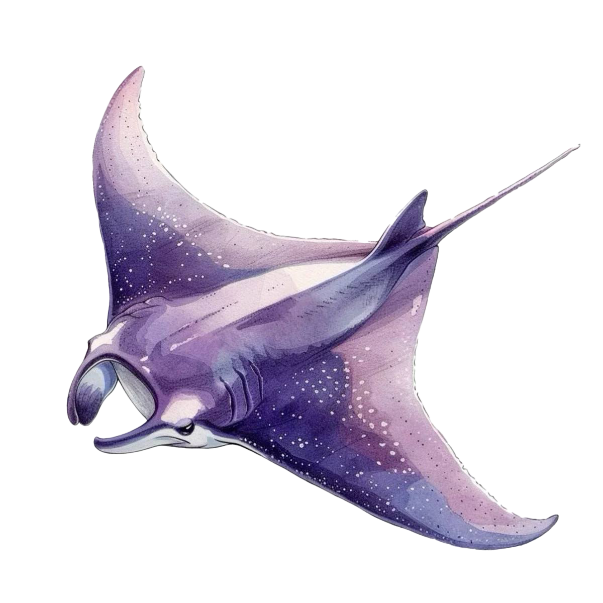
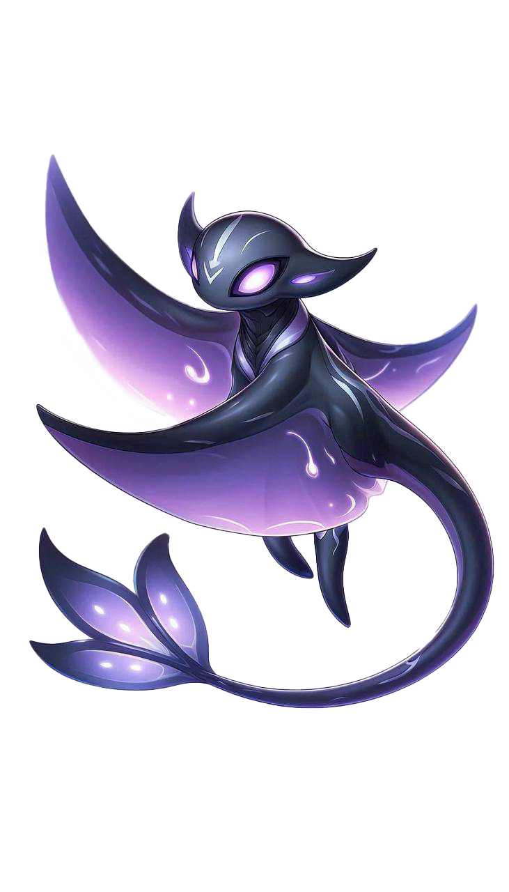
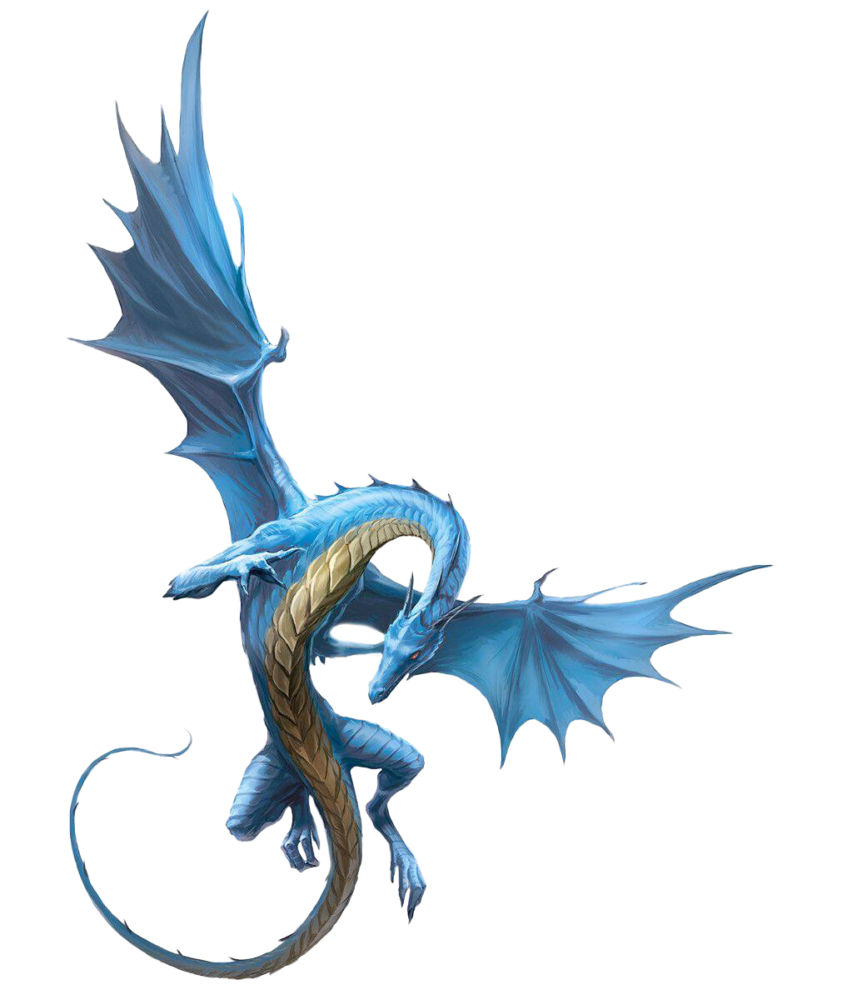
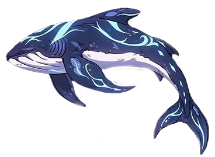

Жители подводного мира

Лунный скат — спокойный обитатель, живущий в собственном ритме. Он почти не реагирует на внешние раздражители и встречается в зонах тишины и рассеянного света кристаллов.

Ноктилюс — хранитель подводного мира, проводник и наблюдатель рифа. Он появляется внезапно и исчезает, реагируя на движение посетителей и открывая скрытые слои пространства.

Кристаллический морской дракон — редкое и загадочное существо, движущееся бесшумно и оставляющее мягкое свечение. Его появление всегда меняет атмосферу пространства.

Люменный кит — гигант глубин, появляющийся в самых тихих и глубоких зонах. Он движется медленно и величественно, словно хранит память подводного мира.